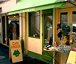
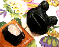
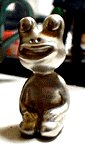

慶祝！自由が丘カエル喫茶が１周年！ 【東京発=自由が丘のフロッグス同志記者】当店ホームページ上にて商品券とかえるのキーホルダーが当たるアンケートを実施中(5/21まで)です。そして４月２２・２３・２４日の三日間、自由が丘の店舗(Cafe)にて、当店の１周年記念による、ドリンク割引や千円以上お買い上げの方には、その場で色々なグッズが当たるスピードくじも実施します。
【全国かえる奉賛会】旭川がま記念館とともに、全国有数のカエル喫茶店としても知られる東京のカエルショップが、めでたく開店一周年を迎えたぞおおお。東京カエラーのみなさん、期間中は店にでかけてみよう。『かえる新聞を読んだ』の一言で、感謝の言葉がプレゼントされるはずです。
福岡かえる展２、画伯からカエル相撲絵を借用！ 【福岡発=福岡かえる展２事務局】福岡かえる展２の第三回実行委員会を福岡市で開きました。今年のコンセプトのひとつは、カエルを通じて環境問題を考える、というもので、ワタナベ画伯が作画した『カエルの相撲絵』を公式画像として借用することになりましたあああ。
【福岡発=福岡かえる展２事務局】福岡かえる展２の第三回実行委員会を福岡市で開きました。今年のコンセプトのひとつは、カエルを通じて環境問題を考える、というもので、ワタナベ画伯が作画した『カエルの相撲絵』を公式画像として借用することになりましたあああ。力士を上手投げでやぶるカエルの力強さを表しています。この日に決まったことは、福岡かえる展２の公式ページで紹介しています。
また、今回は開催経費が窮迫しているので、福岡かえる展２を支援するために、運営経費に充てる、ポストカードを購入してくださああああああああああい！→ここで申し込んでね！
 撮影事故でモロー君が重傷！【福岡発=ぴのこ同志記者】ある情報誌の取材を受けているときに、なぜか現場近くにいた別の会社のカメラマンが、モロー君の胸像を落として壊れてしまいました。首が切断される重傷です。福岡かえる展で購入した初期型で、とっても大切にしていたモロー君なのに！元に戻るのでしょうか！制作者のモロー寺井師に相談してみます。ぜひとも復元してほしいです。
【モロー像おたく；げこげこ大王直筆】ぴのこ同志が事故にあったモロー胸像は、切断面から推定して、福岡かえる展会期中に会場で制作された初期型のひとつと思われる。現場作業のため、希少価値がきわめて高い初期型モロー像のひとつで、マニアには時価４５００円くらいで流通するのではないか。反面、会場製作型は、慌ただしい会場で作られたため、型入れして鋳造する顔面の部分と胸部を接合する首のバランスの調整が不安定で、一定の衝撃を受けると破損することがある。
 こちらは頑丈！全金属製座像も完成か？【福岡発=モロー寺井同志記者】金属製の座像も試作してみました。ハルオ付きモローとか、居眠りバージョンとか、あやしさ満載の次回分譲になりそうです。ぴのこ事務局長のモロー君の治療については、モロー救急救命センター（Ｍ・ＥＲ）で治療にあたりましょう。訪問９９９９９人目に記念品贈呈！【全国かえる奉賛会】９９９９９人目の訪問者に、記念品を贈呈するぞー。該当者は、大王様へのメールwakuro-3@hf.rim.or.jpで自己申告してくれー。福岡かえる展２のＭＬを開設！【福岡かえる展２事務局】福岡かえる展２の実行委員会用のメーリングリストを開設しました。公式ホームページの他に、実行委員会メンバーが情報交換する場所です。もちろん最新の情報は、昨年同様に、できるかぎりすべて、公式ホームページで公開します。メーリングリストで、その準備段階から体験したいというカエラーは、参加していただいてかまいません！参加申し込みは、ここからも自分でできるからねーっ！ 投稿採用者に武功カエル徽章を授与！ |
かえる古新聞過去に取り上げた記事を見出し付きで一覧したい人は、ここをクリック◆創刊号を見る◆先週号を見る◆話題の号を見る◆かえる新聞の昔を読む
|
私も入っています。。全国かえる奉賛会
大王様に会うには、このバナーをクリック。ずっと奥に写真館があるぞ。全国かえる奉賛会に入会するには、自分のホームページのどこかに、下の部分を追加するとバナーがリンク付きで表示されるぞ。どんどん入会しましょー |


|